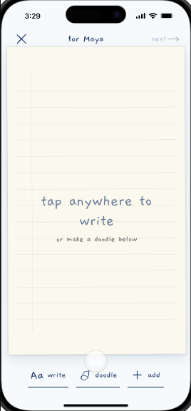
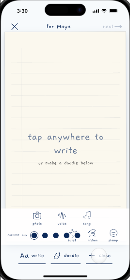
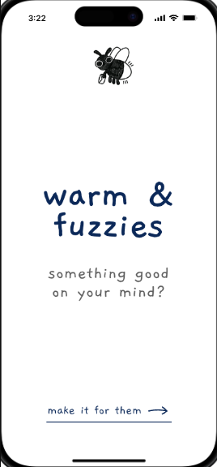
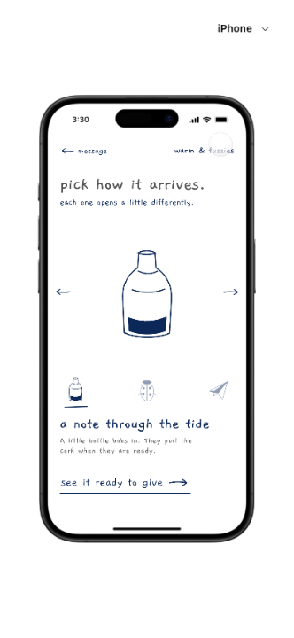
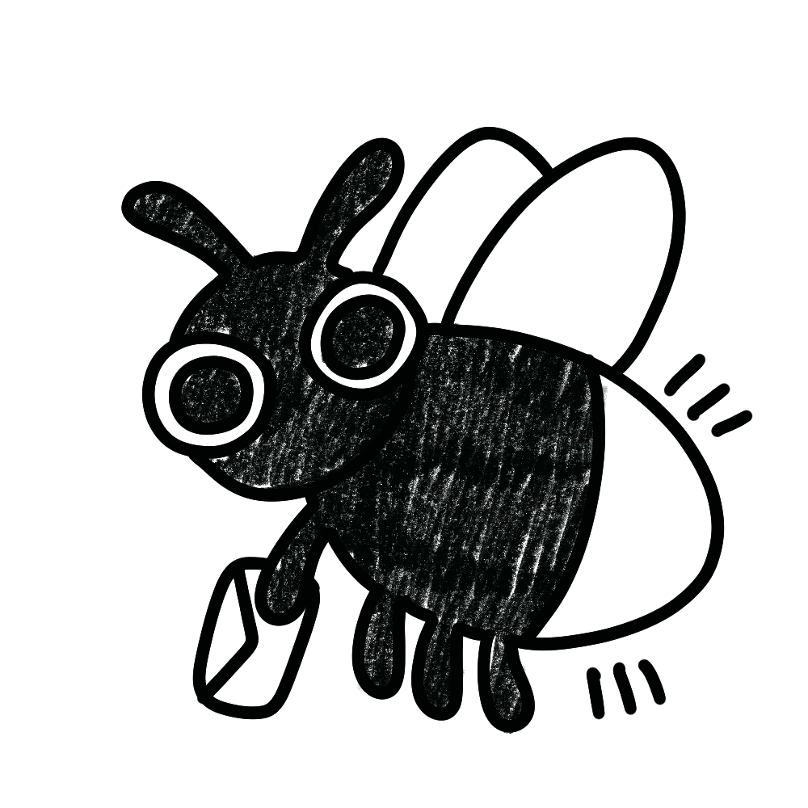
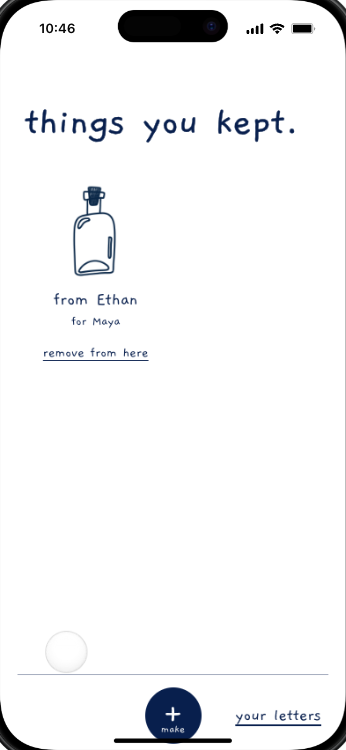

warm &
fuzzies
SUEDE Designathon 2026
SUEDE Designathon 2026
So why can one honest sentence still feel hard to send?
make appreciation feel natural to express on an ordinary day?
Working problem frame · bounded by relationship, culture and communication style
03 / 13A design-space map, not research data and not proof that one channel is better
04 / 13Research direction · methods of expression, interpretation and the receiving moment
05 / 13Care was already visible in small acts.
Time, help, humour and checking in often carried the appreciation indirectly.
Direct words usually needed a reason.
Milestones and difficult moments gave sincere messages a familiar social script.
The way it arrived changed the meaning.
Deliberate, keepable formats could feel more personal—but could also create pressure.
Working qualitative synthesis · insert exact interview sample, coding and exceptions before final use
06 / 13shows care through time,
stories and small acts
feels the care, but saves
the words for milestones
different routines
care is understood
direct appreciation waits
Help the granddaughter make one thoughtful object—without demanding a live reply.
Illustrative relationship lens · replace with sourced persona details before final use
07 / 13


Actual prototype iterations · process shown only where it changed the interaction
08 / 13Turns an appreciative thought into a private object someone can open and keep.
Working coded prototype · the social effect remains a hypothesis
09 / 13start with their own words

add a personal mark if wanted

bottle, firefly or paper plane

a private link carries the object
Implemented prototype flow · no AI writes the intimate content
10 / 13
open now, later, or decline

see the object as it was made

no sender-visible receipt or required reply
Implemented receiver controls · production privacy, identity and persistence remain unresolved
11 / 13Open the same receiving experience we just showed—privately, optionally, and without needing to reply.
warmandfuzzies.example/link
No phone? We will open the same experience on screen.
Draft handoff card · replace placeholder with the verified live URL and scannable QR
12 / 13Warm & Fuzzies gives one appreciative thought
a form someone can receive on their own terms.
warm & fuzziesWorking conclusion · demonstration is not impact evidence
13 / 13